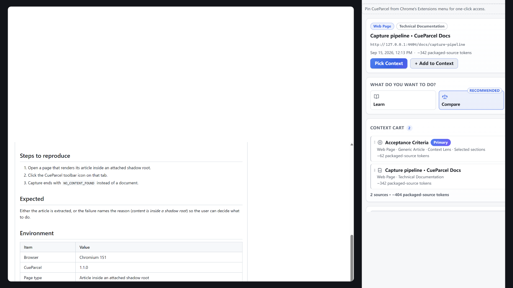
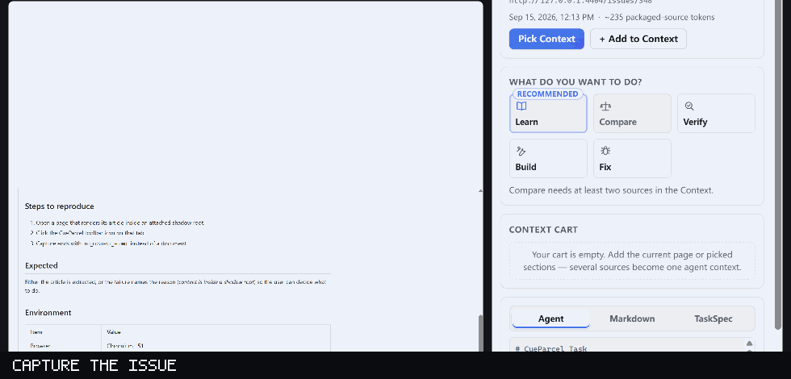
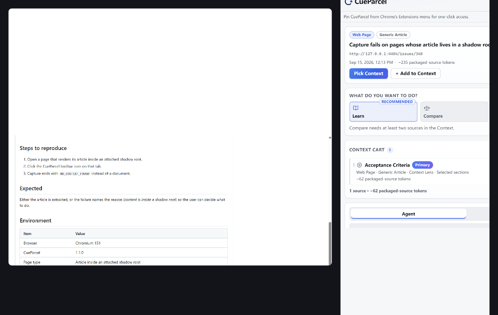
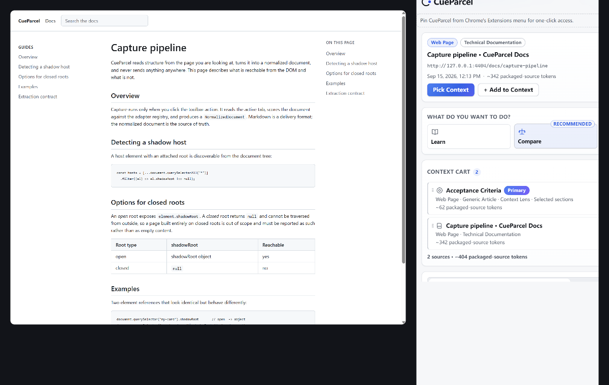
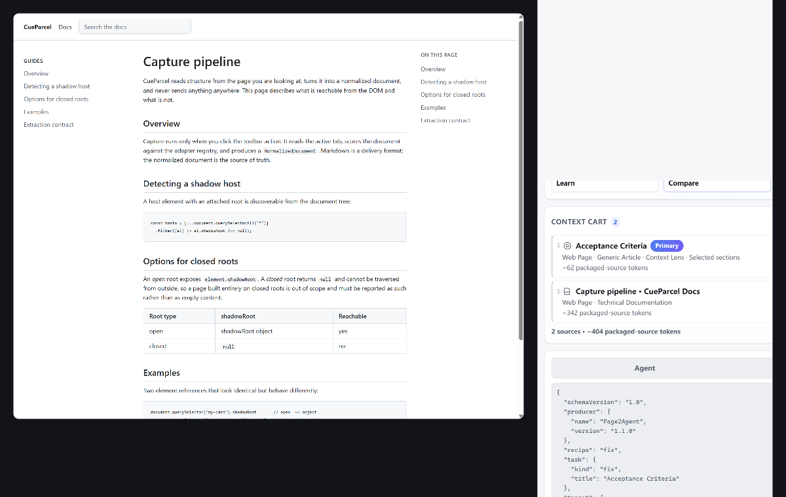

Pick what matters. Pack it for AI.
Turn any webpage into clean, source-grounded context for AI.
CueParcel lets you visually pick what matters, combine multiple sources, choose what you want AI to do, inspect the package, and copy it to any agent.
- No backend
- No telemetry
- No API key
- Local-first

Live demo
A real recording of the product, not a mockup. Watch the page under the cursor: each semantic region lights up before you click, and its token count appears in the panel.

Your system asks for reduced motion, so the animated recording is not played here. A single frame of it is shown instead; the screenshots elsewhere on this page show the product in the same states.
How it works
Three steps, all of them triggered by you.
-
Capture the page
Click the CueParcel toolbar icon on a page. Capture runs for that tab and the Side Panel opens.
-
Pick what matters
Use Context Lens to pick sections of the page visually. Add more pages, picked sections or text selections to the Context Cart.
-
Pack it and copy
Choose a recipe (Learn, Compare, Verify, Build or Fix), inspect the Agent text, Markdown or TaskSpec, then copy it into any agent.
What it understands
Six parts, each doing one job.
-
Context Lens
Pick sections of a page visually. Semantic regions highlight on hover with live token counts; click to include or exclude. The page itself is never modified.
-
Context Cart
Combine several pages, picked sections and text selections into one context, each with a role (Task, Reference, Evidence, Example, Selection) and one primary source.
-
Context Recipes
Choose what the agent should do instead of writing a prompt: Learn, Compare, Verify, Build, Fix.
-
Semantic adapters
Generic Article, GitHub Issue, GitHub Pull Request and Technical Documentation, with honest fallback to generic when confidence is low.
-
TaskSpec
A versioned portable JSON task contract: sources, roles, provenance, adapter-verified facts, acceptance criteria only when the source states them, explicit unknowns and token estimates.
-
Context Receipt
A compact summary of exactly what the agent will receive, including what was excluded. No fake quality scores.
Use cases
Three concrete things you can do with it today.
-

Turn a bug report into a repair brief
Pick the issue's acceptance criteria, add the relevant documentation as a reference source, choose Fix. The package carries the issue and your picks as separate sources with roles, so the agent can tell the report apart from the docs.
-

Compare two pages
Add both pages as sources and choose Compare. Compare stays disabled until there really are two sources in the cart, so you cannot ask for a comparison that has nothing to compare.
-

Package documentation for implementation
Pick the relevant documentation sections, choose Build, and copy a task that points at the documentation instead of pasting the whole site into a chat window.
Privacy
CueParcel prepares and copies context. It does not send your pages anywhere, and it does not call an AI provider for you.
- Capture is always user-triggered. Nothing runs in the background.
- Everything is processed locally inside the extension. No backend, no analytics, no telemetry, no provider keys, no cloud sync, no remote code.
- Session state lives in
chrome.storage.sessionand is cleared when the browser closes. Captured page content is never written tochrome.storage.local. - Exactly four permissions, and nothing else. No host permissions and no
<all_urls>.
CueParcel has not been through any formal security certification. The claims above describe what the extension does and which permissions it requests; they are not a certificate.
Install
Chrome Web Store publication is planned, not shipped. There is no store listing yet and no store install link on this page. Today you install CueParcel from a GitHub release or by building it yourself.
Install a release (recommended)
- Download the latest release ZIP from GitHub Releases.
- Unzip it.
- Open
chrome://extensions— in Edge,edge://extensions. - Enable Developer mode.
- Click "Load unpacked" and select the unzipped folder.
Chrome and Edge do not update an unpacked extension for you, so repeat these steps when a new release appears.
Build from source
Needs Git and Node.js with npm. Clone the repository address shown in the buttons on this page, then from a terminal inside the cloned folder:
npm ci
npm run buildThen load the generated dist/ folder unpacked, with the same steps as above (Developer mode, then "Load unpacked").